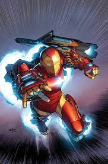

Tony Stark teve uma relação difícil com seu pai, sendo enviado aos seis anos de idade para um internato, onde ele iria em breve começar a experimentar a convivência com mais pessoas. Mesmo sendo uma criança no ensino médio, ele era considerado por muitos como um prodígio e gênio. Mais tarde, é revelado que Howard Stark, mesmo sendo uma boa pessoa, quando é vítima da fraqueza dos Starks (o álcool), se tornava um alcoólatra desprezível tanto verbalmente quanto abusivo com sua esposa e filho. Foi Howard quem forçou Tony a beber sua primeira bebida alcoólica. Howard tentou ensinar à Tony muitas lições, tais como os custos de fazer a guerra e que ele deve sempre limpar suas próprias mãos.
Como Tony Stark se tornou o Homem de Ferro?
A gênese do Homem de Ferro está situada em um ambiente de confronto característico da Guerra Fria, o Vietnã. Na época, os Estados Unidos alimentavam o conflito com homens e armamentos, mas não se encontravam ainda em envolvimento aberto. É no fornecimento de armamentos que atua o bilionário Tony Stark, industrialista que, ao inspecionar o uso de uma arma projetada por sua fábrica, é vítima de um acidente que aloja estilhaços de bomba em seu coração, gerando uma situação de perene ameaça. Encontrado pelos vietnamitas, Stark é aprisionado e forçado a desenvolver uma arma para eles, contando para isso com a ajuda de um velho cientista. Enganando seus carcereiros, Stark desenvolve uma armadura de ferro à base de transistores, que lhe possibilita manter seu coração batendo normalmente e representa uma arma inigualável. Derrotado o inimigo, ele retorna ao seu país e inicia sua carreira como super-herói.
Acesse o site para saber mais sobre o Homem de Ferro! Aqui


Poderes do Homem de ferro
Força Sobre-Humana
Ele é capaz de levantar até 100 toneladas ao usar sua armadura e pode alcançar maiores níveis de força quando alimentado por uma fonte suficientemente mais poderosa. Quando a Mulher-Hulk entrou em um grande frenesi, Tony conseguiu colocá-la em um soco. Sua força exata depende muito da armadura que ele está vestindo.
Velocidade Sobre-Humana
Mesmo quando não está viajando por longas distâncias, a armadura permite que o usuário se mova e reaja a velocidades muito altas, mostradas, por exemplo, quando conseguiu superar o Homem-Aranha e o Tocha Humana.
Vôo
A armadura geralmente pode atingir velocidades superiores a Mach 10, no entanto Iron Man foi recentemente retratado como capaz de atingir velocidades de escape orbital (5 milhas por segundo) e até velocidades que podem ultrapassar buracos negros. O uso das botas do jato fornece energia suficiente para levantar uma carga de cerca de 500 toneladas. Os fatos mais recentes são até mesmo capazes de atingir a velocidade da urdidura.
Celas de Poder
A maioria de suas armaduras é alimentada por uma combinação de conversores solares, baterias elétricas e um gerador a bordo que usa a absorção de partículas beta como fonte de combustível. Os modelos atuais após Armadura do Homem de Ferro Modelo 38 usam um conjunto de cinco geradores do Repulsor Tech para serem alimentados.
Melhor Homem de Ferro